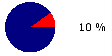
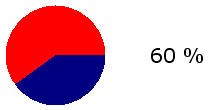
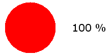

examples
examples$Date$
 Introduction
IntroductionThis example requires :
This example will display a plain circle 360 degree as new shape of progress meter.
This example will run a circle (size:100x100) filled in reverse way.
There are 10 cells with :
A cache system is used on lines 29 thru 37, to avoid built pictures a second times.
[Top]
 Render options
Render options font-size = 20 width = 100
width = 100 height = 100 spacing = 0 inactive-color = navy active-color = red
[Top]
 Output
Output  
[Top]
 PHP source syntax highlight
PHP source syntax highlight[Top]
 Play demo
Play demoRun the script.
[Top]